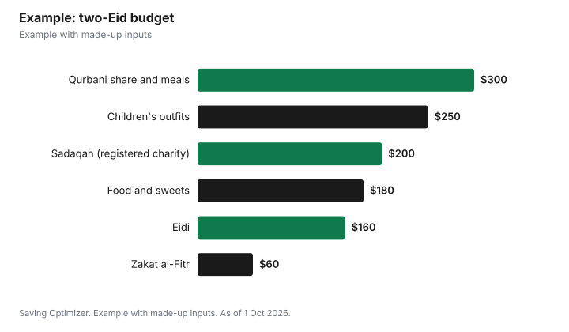

Events · Canada
Eid Budget Canada 2027: Planning Eid al-Fitr and Eid al-Adha Costs
Eid al-Fitr 2027 falls on Tuesday, 9 March, by the Fiqh Council of North America's calculated calendar, and Eid al-Adha comes about two months later, in mid-May. Many mosques follow local moon sighting, so your community's date may differ by a day. To budget for both, set your charity amounts first, including zakat al-Fitr per family member as set by your mosque, then divide what is left among food and hosting, gifts and Eidi for children, and new clothes. Statistics Canada data show the average household spent $386 a year on cash gifts to people in Canada and $671 on charitable contributions in 2023, which gives a useful sense of scale.
Key takeaways
- Eid al-Fitr 2027: Tuesday 9 March on FCNA's calculated calendar; local sighting may differ.
- Ramadan 2027 begins Monday 8 February on the same calendar.
- Eid al-Adha follows the Day of Arafah in mid-May 2027.
- Give through registered charities for official receipts if you want a tax credit.
- Average 2023 household cash gifts to people in Canada: $386 a year (Statistics Canada).
- Example with made-up inputs: a $1,150 two-Eid budget for a family of four.
Eid dates in 2027
The Fiqh Council of North America (FCNA) publishes a calculated Islamic calendar. It says the new month begins the day after conjunction if, at local sunset somewhere on the globe, the moon is at least 8 degrees from the sun and at least 5 degrees above the horizon. For Eid al-Adha, FCNA says it follows the Day of Arafah as determined by the Supreme Court of Saudi Arabia. Mosques that rely on local moon sighting may announce a different day, so confirm with your own mosque before booking time off or a hall.
| Event | FCNA calculated date |
|---|---|
| 1 Ramadan 1448 | Monday 8 February 2027 |
| Eid al-Fitr (1 Shawwal 1448) | Tuesday 9 March 2027 |
| 1 Dhul-Hijjah 1448 | Friday 7 May 2027 |
| Eid al-Adha | The day after the Day of Arafah, as set in Saudi Arabia (mid-May 2027) |
Because Eid al-Fitr 2027 falls on a weekday, many people take a vacation day or arrange a shift swap. Plan that early, especially if your work schedule is set weeks ahead.
Where Eid money goes
Most Eid spending falls into five buckets: charity, food and hosting, gifts and Eidi, clothes, and outings. Statistics Canada's household spending survey does not track Eid separately, but its 2023 averages show how big these categories are across a whole year for a typical household. That helps you size an Eid budget as a share of what you already spend.
| Category | Average per household, 2023 |
|---|---|
| Food purchased from stores | $8,579 |
| Food purchased from restaurants | $3,316 |
| Clothing and accessories | $2,716 |
| Gifts of money to people in Canada | $386 |
| Gifts of money to people outside Canada | $185 |
| Charitable contributions | $671 |
Charity first: zakat al-Fitr, sadaqah and receipts
Zakat al-Fitr is counted per person, and mosques and zakat organizations announce the amount and the timing each year. Check your mosque's announcement during Ramadan rather than using a figure from another city or year. Many families also give sadaqah and, for Eid al-Adha, pay for a qurbani share through their mosque or a charity.
If you want a tax credit, give to a registered charity or other qualified donee and keep the official receipt. The CRA says donation credits are non-refundable, you can generally claim up to 75% of your net income, you can carry unused donations forward for five years, and spouses or common-law partners can pool donations on one return. Cash given directly to people, including Eidi, is a gift, not a donation, and has no tax credit. Before giving to a new organization, look it up in the CRA's charity search.
| Type of giving | Official receipt and credit? |
|---|---|
| Zakat or sadaqah through a registered charity | Yes, with an official receipt |
| Qurbani through a registered charity | Possibly, if the charity issues an official receipt |
| Cash given to family or neighbours | No; it is a gift |
| Eidi for children | No; it is a gift |
| Donations to an organization that is not a qualified donee | No |
Food, hosting and outings
Eid al-Fitr usually means a breakfast or lunch after prayer and visits through the day; Eid al-Adha often includes meat from qurbani and larger family meals. The cheapest move is a potluck rota, where each household brings one dish. Buy dry goods, rice, flour and spices during regular sales in the weeks before, and order sweets early from a bakery that confirms its price. If your mosque or community centre hosts an Eid festival, those events are often free or low-cost alternatives to restaurants and paid venues.
Gifts, Eidi and clothes
Eidi is easiest to budget as a fixed amount per child by age band, agreed with siblings or cousins so no family feels outspent. For clothes, families often buy one outfit per child for Eid al-Fitr and reuse it, or buy for one Eid and not the other. Buying shoes and outfits in the weeks after Eid al-Fitr, when demand drops, can cover Eid al-Adha for less.
Example with made-up inputs
These numbers are an example with made-up inputs. A family of four in Ontario plans both Eids in 2027. They set aside a made-up $60 for zakat al-Fitr (their mosque's per-person amount times four) and $200 of sadaqah through a registered charity for a receipt. For Eid al-Fitr they budget $180 for food and sweets, $160 for Eidi to eight nieces and nephews at $20 each, and $250 for two children's outfits. For Eid al-Adha they budget $300 for a qurbani share and meals. The total comes to $1,150, of which $200 to $500 may be receiptable depending on the charity.
| Item | Eid al-Fitr | Eid al-Adha |
|---|---|---|
| Zakat al-Fitr (4 people) | $60 | — |
| Sadaqah via registered charity | $200 | — |
| Food and sweets | $180 | — |
| Eidi (8 children at $20) | $160 | — |
| Children's outfits | $250 | — |
| Qurbani share and meals | — | $300 |
| Total | $850 | $300 |

Steps
- Confirm your mosque's Eid dates and its zakat al-Fitr amount per person.
- Choose registered charities and keep official receipts for anything you will claim.
- Set Eidi amounts by age band with family.
- Plan food as a potluck and stock up on staples during regular sales.
- Book any time off for a weekday Eid early.
- Track what you spend this year to set next year's budget.
Common mistakes
- Assuming another city's zakat al-Fitr figure applies to your mosque.
- Expecting a tax credit for cash Eidi or gifts to relatives.
- Booking a hall for one date when your mosque may announce the next day.
- Leaving outfits and sweets to the final week, when choice is thin.
For other celebrations, see a Lunar New Year budget and donation tax credits.
Sources
- Fiqh Council of North America, Islamic Calendar (1448 AH), fiqhcouncil.org, as of 1 Oct 2026.
- Statistics Canada, Table 11-10-0222-01 Household spending, Canada, regions and provinces (2023), as of 1 Oct 2026.
- Canada Revenue Agency, Guide P113 Gifts and Income Tax and Line 34900 Donations and gifts, canada.ca (Wayback copies), as of 1 Oct 2026.
- The family's amounts in the example, including the zakat al-Fitr figure, are an example with made-up inputs.
Frequently asked questions
When is Eid al-Fitr 2027 in Canada?
Tuesday 9 March 2027 on the Fiqh Council of North America's calculated calendar. Mosques that use local moon sighting may announce a different day.
When does Ramadan 2027 start?
Monday 8 February 2027 on FCNA's calculated calendar.
When is Eid al-Adha 2027?
FCNA says it is the day after the Day of Arafah as set in Saudi Arabia; Dhul-Hijjah begins 7 May 2027 on its calendar, so Eid al-Adha falls in mid-May.
How much is zakat al-Fitr in Canada?
It is set per person by your mosque or zakat organization each year, so check their announcement during Ramadan.
Is zakat tax deductible in Canada?
If you give through a registered charity or other qualified donee and get an official receipt, you can claim a non-refundable donation credit.
How much do Canadians spend on cash gifts?
Statistics Canada says the average household gave $386 to people in Canada and $185 to people outside Canada in 2023.
Researched and drafted with AI assistance and fact-checked against official Canadian sources. How we create content.
Disclosure: Saving Optimizer may earn a commission if a partner link is added later, such as a grocery or gift offer type. No partnership is claimed on this page. Education only, not religious or tax advice.